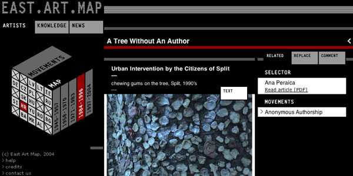

basekamp space > Events
East Art Map: IRWIN / NSK
Video screenings
IRWIN presentation
EAM project
EAM online
EAM Book
About IRWIN / NSK
EAM online:

East Art Map Online is a tool that will lead you through the last 50 years of the history of visual arts in Eastern Europe.
You will get to know 250 artists/events/projects that are considered of major importance by the 24 invited art critics, curators and artists from the different ex-socialist Central, Eastern and South-Eastern countries invited to make an initial selection for the EAM.
East Art Map Online is now open for contributions by its users.
You are invited to participate in the selection of the ten most important artworks or crucial art projects from every country of Eastern Europe since 1945.
How to participate?
We invite anyone who wishes to, and who thinks s/he has a better idea than the initial selectors, to propose a replacement for any project or artwork included in the EAM.
Send your proposal - complete with a) a written page of text presenting your suggested replacement and the reasons why it should be included, and b) written references confirming the reliability of the date of the work you are proposing for inclusion - to editor@eastartmap.org or submit it directly at this website on the information page of the artist you wish to replace.
All the proposals - provided they contain the requested materials - will be displayed on the website and kept for public discussion until the final decision of the international committee. A feedback area will be installed.
Every two to three months an international committee of six experts will decide whether or not to include any of the proposals submitted.
Any questions should be directed to the editor Inke Arns at editor@eastartmap.org